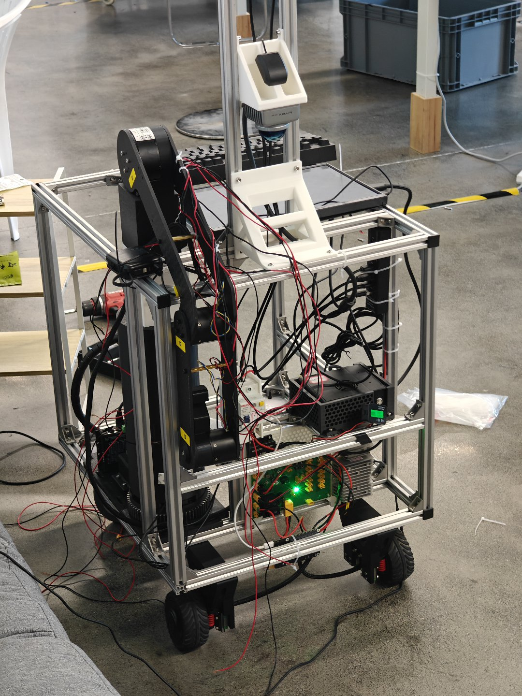
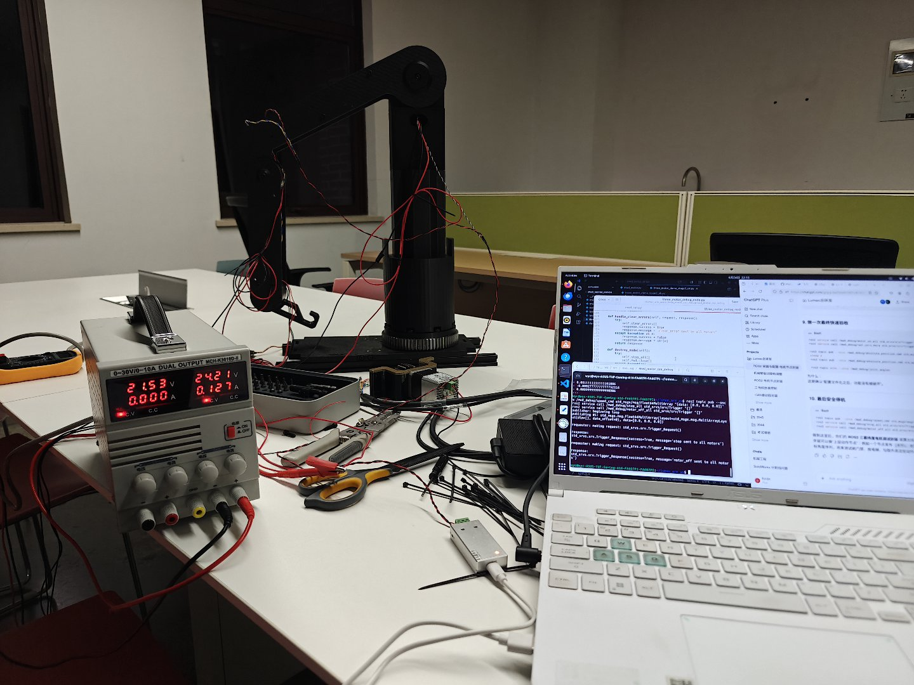
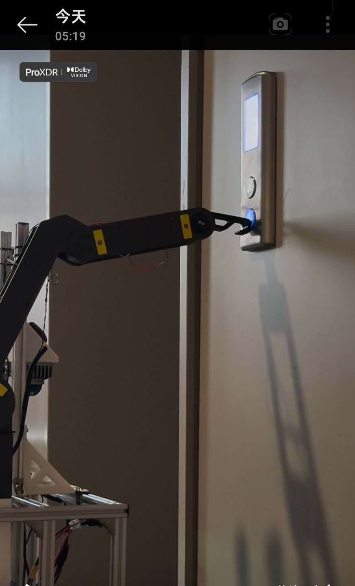
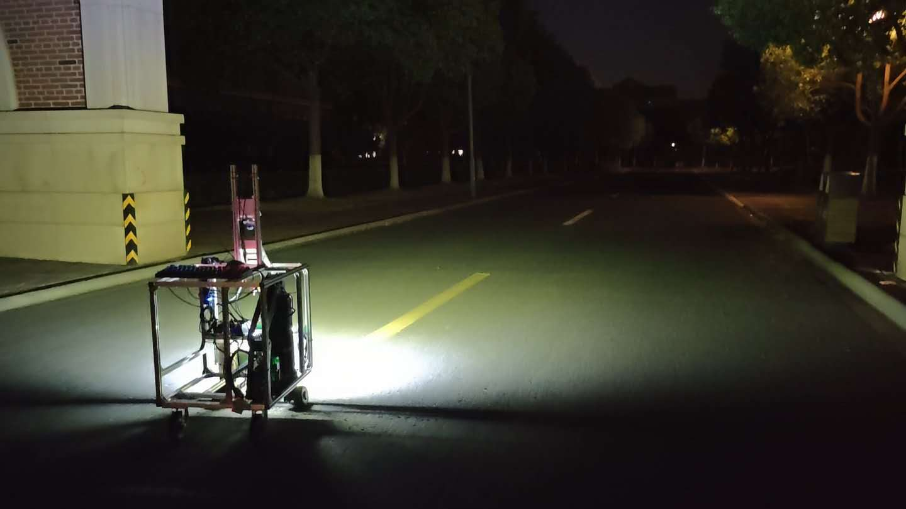
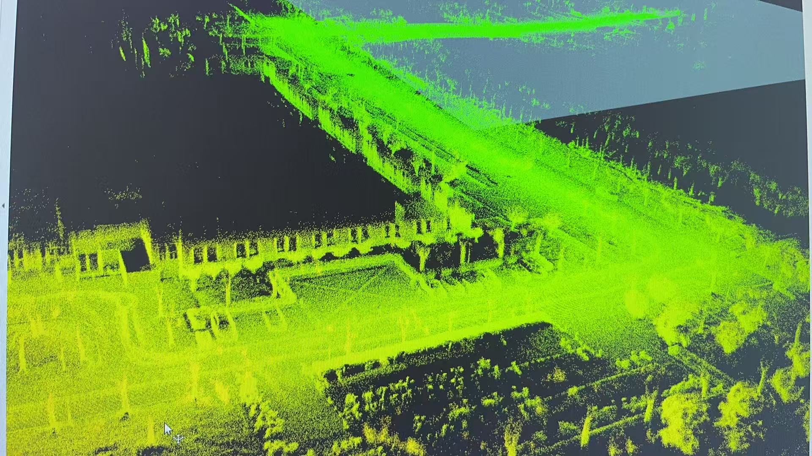
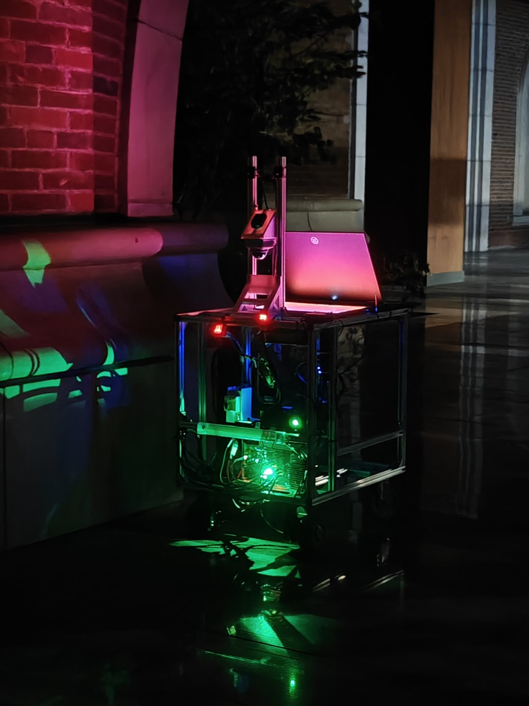
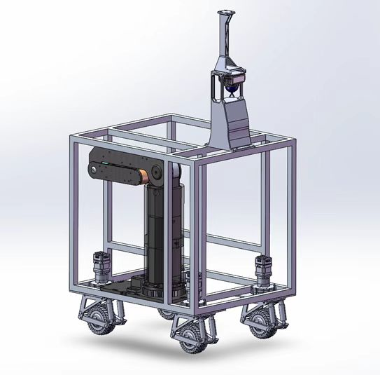
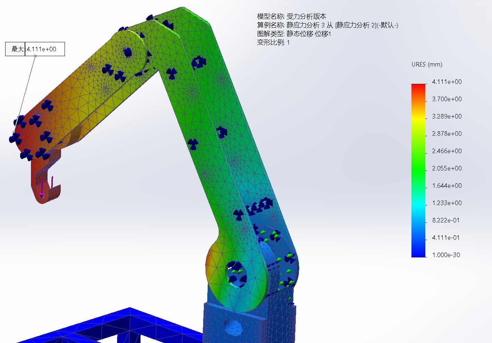
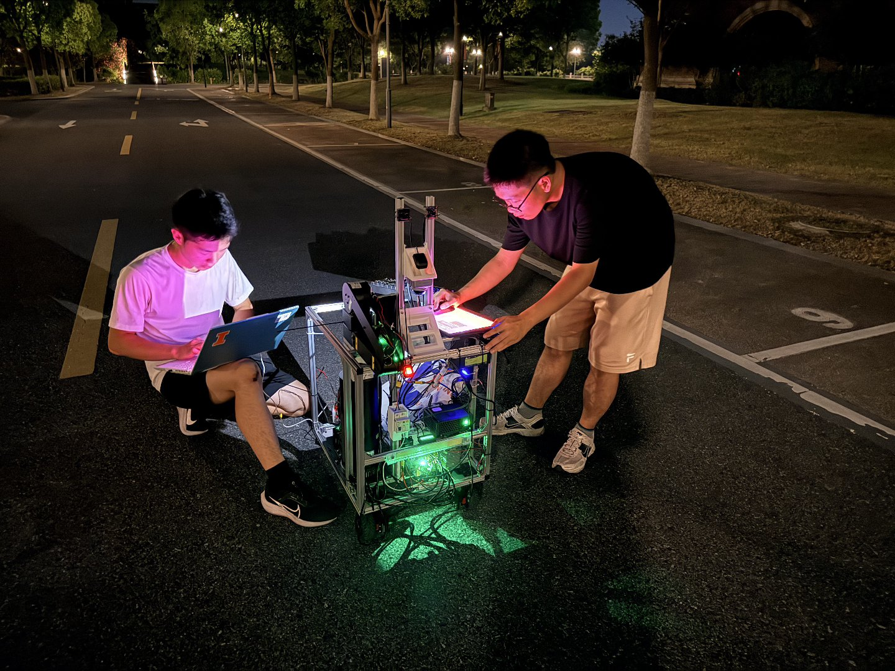

Project overview
Lumeo is an autonomous-delivery robot project designed for closed and semi-closed campus environments. The system is intended to operate across indoor and outdoor spaces, navigate around obstacles, pass access-control points, use elevators, and handle delivered items with an onboard manipulator.
The project is still under active development. The current vehicle has demonstrated early-stage autonomous navigation under constrained conditions, while the robotic arm has a working low-level control stack for its three pitch joints. Full five-axis integration, motion planning, and end-to-end autonomous interaction remain ongoing work.
My role & contribution
System leadership
- Founded the team and served as project lead, technical lead, and robotic-arm lead.
- Defined the overall vehicle technical route, sensor selection, and major component choices.
- Coordinated an 8-person technical group within a 15-member project team.
Hands-on engineering
- Designed the vehicle mechanical architecture and guided multiple chassis iterations.
- Designed and iterated the 5-DOF arm and contributed to hardware integration, wiring, soldering, and cable routing.
- Implemented the Python/ROS 2 motor-control stack for the three pitch joints over SocketCAN.
System overview
The current prototype uses a simple, fast-to-iterate mobile base while leaving room for more advanced chassis concepts explored during development. The vehicle carries onboard compute, perception hardware, control electronics, batteries, and the service arm within a compact open-frame structure.

Navigation concept
- Indoor localization: LiDAR map matching.
- Outdoor localization/orientation: GPS + industrial camera.
- Obstacle detection/avoidance: LiDAR-based sensing.
Mechanical iterations explored
- Four-steer-wheel chassis.
- Stair-climbing chassis concept.
- Current dual hub-motor + dual caster configuration for cost and iteration speed.
5-DOF service arm
The arm uses an R-P-R-R-R serial chain: base yaw, a 200 mm vertical prismatic axis, and three coplanar pitch joints. Its passive hook end-effector is intended for simple, robust interactions such as pressing elevator buttons, presenting access credentials, and hooking or placing delivery bags.


Autonomous navigation & perception
Navigation development has progressed through repeated indoor and nighttime campus testing. The emphasis so far has been validating sensing, localization, basic autonomous motion, and the practical integration of compute, sensors, and drive hardware on the full vehicle.



ROS 2 / CAN control architecture
My current implementation work is concentrated on the three pitch joints. The motor-debug/control package runs in Python on Ubuntu/ROS 2 and communicates through Linux SocketCAN → USB-CAN → servo actuators.
Implemented by me
- CAN protocol encapsulation and state parsing.
- Position and velocity control.
- Direction correction and reduction-ratio conversion.
- Software zeroing and soft limits.
- YAML parameter configuration.
- ROS 2 workspace, package, node, topic, service, launch, and multi-motor integration.
Next integration step
Unify all five active joints on the MCU/ROS 2 interface, then complete the full kinematics and motion-planning chain. The validated Python motor-control logic is intended to guide later migration of real-time and safety-critical functions to STM32/C firmware.
Mechanical design & simulation
Mechanical development combines fast iteration with 3D printing, custom carbon-fiber plates, CNC-machined aluminum parts, aluminum extrusion, and commercial hardware. SolidWorks is used for current design work, with Autodesk Fusion used on the first arm iteration.


Development & testing
The project has been developed through repeated full-system integration sessions rather than isolated subsystem demos. Mechanical, electrical, sensing, and software issues are debugged directly on the robot during field tests.

Programs & project development
Lumeo has been developed across several Zhejiang University undergraduate research and innovation programs. I use the project as a long-horizon platform for learning system engineering: building a physical system, finding where the interfaces fail, and iterating across mechanics, electronics, controls, and autonomy.